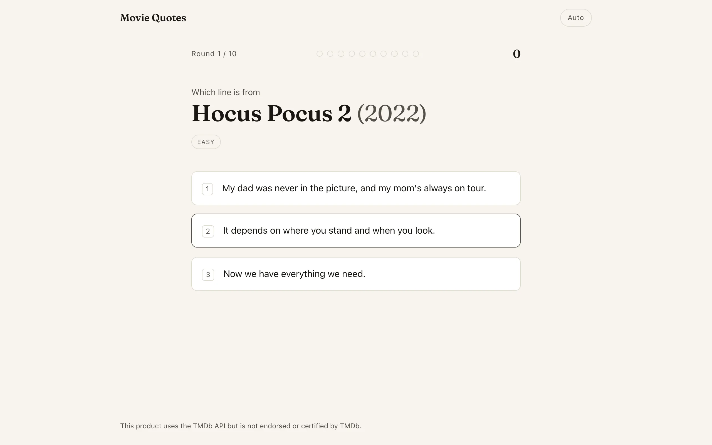
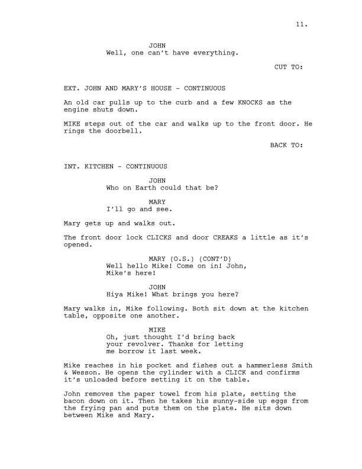

Each round names a film and shows three lines of dialogue. One was spoken in that film. The other two are real quotes from other movies, chosen because they sound like they could belong. You pick, the answer is revealed along with where the impostors came from, and the next round loads. A game is ten rounds.
I think a multiple-choice quiz is only as good as its wrong answers. A decoy from a different genre or era gives itself away before you've finished reading it. So I pick decoys by how close a line reads to the real one, measured with sentence embeddings, blended with how similar its source film is. That same similarity score sets the difficulty and the point value of each round.
Building the corpus
Films come from the TMDb discover API: English-language releases with at least 1,000 votes and a rating of 6.5 or higher, collected against per-decade quotas from the 1950s through the 2020s. The quotas total 5,000 films and reserve 880 of them for pre-1980 releases, so the corpus isn't all recent blockbusters. Each film also gets its TMDb genre and keyword IDs, which I use later for picking decoys. The fetcher caches every response on disk, bounds concurrency, and backs off honouring Retry-After, so re-runs cost nothing.
The quotes themselves come from Springfield! Springfield!, which hosts dialogue-only transcripts. I match titles by normalized name and require the release year to agree within one year, so a remake doesn't get paired with its original. I also wrote a full IMSDb screenplay source and a cue-based parser, and then didn't use it. Screenplays leak scene description into the quote pool, and "He walks slowly to the door" is not something anyone said on screen. Transcripts contain nothing but speech.

{kind=link}
Raw transcripts are noisy. I split each one into sentences, strip bracketed sound cues and parentheticals, including the orphaned halves that subtitle line breaks leave behind, drop leading speaker labels, and repair common OCR damage ("l'm" to "I'm", "wiII" to "will"). A cleaned sentence then has to pass a set of checks to become a candidate: 30 to 180 characters, at least four words, at least 60% letters, more lowercase than uppercase (which rejects credits and shouted stage text), a reasonable unique-word ratio (which rejects song lyrics and chants), and a capital first letter. The check that matters most is that it has to read like speech: a first or second person pronoun, a verb contraction, or a question or exclamation mark. Third-person narration has none of those. Each film contributes at most 100 quotes, sampled evenly across the transcript.
Decoys by nearest neighbour
Every quote is embedded with bge-small-en-v1.5 running locally through Transformers.js, mean-pooled and unit-normalized so cosine similarity is a dot product. The vectors are written as one flat Float32Array. JSON at this scale would have been hundreds of megabytes.
Comparing every quote against every other is quadratic, so I restrict each quote to quotes from its film's 60 most similar films. Film similarity is 0.5 times the Jaccard index over genres, 0.2 times decade proximity (zero at 40 years apart), and 0.3 times Jaccard over keywords. I did that for speed, and it's also a quality win. Decoys come from adjacent-world films, so a noir line gets noir impostors.
Each quote keeps its top 20 cross-film neighbours. A candidate's hardness is 0.7 times the semantic similarity plus 0.3 times the film similarity. A round stores the answer plus a ranked pool of its eight hardest decoys, at most one per film, with a near-duplicate guard that drops any candidate whose token set overlaps the answer or another kept decoy with Jaccard at or above 0.8. Rounds that can't fill the pool are skipped, and the final pool is capped at 150,000 rounds.
Difficulty and scoring
Each round's average decoy similarity becomes its difficulty band, assigned by terciles over the whole pool so easy, medium, and hard are always equally populated. The game starts easy. A correct answer steps the next round's band up and a wrong one steps it down.
A correct answer scores
\[ \left( B + 50 \cdot \max\!\left(0,\ 1 - \tfrac{t}{10\,\text{s}}\right) \right) \cdot \min\!\left(1 + 0.1\,s,\ 2\right) \]where \(B\) is 30, 60, or 100 points by band, \(t\) is the answer time, and \(s\) is the streak of prior consecutive correct answers. The time bonus decays to zero over ten seconds and the streak multiplier caps at 2. A wrong answer scores nothing and resets the streak. All of this happens server-side. The client doesn't learn the answer until it has committed a guess.
Serving rounds from the edge
The API is Hono on Cloudflare Workers with the pre-generated rounds in D1, Cloudflare's edge-hosted SQLite. My first version picked a random round with ORDER BY RANDOM(), which scans the whole table. Now every round carries a rand value in \([0, 1)\), the query draws a pivot and takes the first row with rand ≥ pivot on a (band, rand) index, wrapping to the start if nothing matches. That's an indexed seek and it works under difficulty, decade, and genre filters. It's close to uniform but not exactly. Each row's chance of being picked equals the gap between it and the row before it, so once the table exists the distribution is fixed and slightly lumpy, and a filter that thins the rows makes it lumpier. For a quiz that's fine. The client sends the round and movie IDs it has already seen as exclusion lists, so a game avoids repeating rounds and films, and drops the movie exclusion if it would leave nothing to serve.
Choices are assembled per request from the ranked pool and shuffled with Fisher-Yates driven by mulberry32 seeded with the round ID. The shuffle has to be deterministic for the share feature. Finishing a game produces a Wordle-style result block plus a challenge link carrying the exact round IDs, and whoever opens it replays the same rounds with the choices in the same order.
The front end is SvelteKit on Cloudflare Pages. While you read the reveal screen the next round is already prefetched. Keys 1 through 3 answer, Enter advances, and personal stats live in localStorage. There are no accounts and nothing is tracked server-side. A sibling project, unquote, goes the other way and searches the same dialogue.